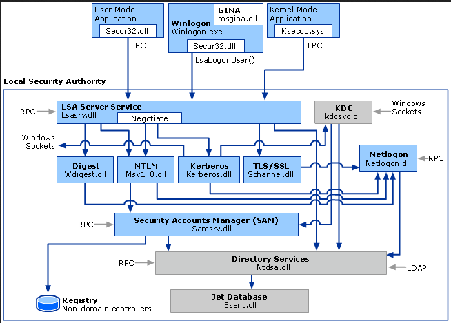
Este esquema representa el proceso de autenticación del sistema que se realiza en windows.
Cuando se intenta autenticar tenemos nuestra interfaz de usuario en la que introducimos nuestras credenciales, este proceso se comunica con el LocalSecurityAutority que recibe las credenciales y el paquete de autenticación a utilizar.
Si nos encontramos en una infraestructura de dominio el paquete será kerberos pero a nivel local el paquete será NTLM, por tanto el LSA llamará a la librería correspondiente.
A nivel local el sistema comprueba las credenciales contra una base de datos local manejada por el SAM.
Si en nuestra máquina queremos iniciar sesión con un usuario a nivel local, seleccionamos otro usuario e indicamos que el usuario está registrado a nivel local del la siguiente manera:
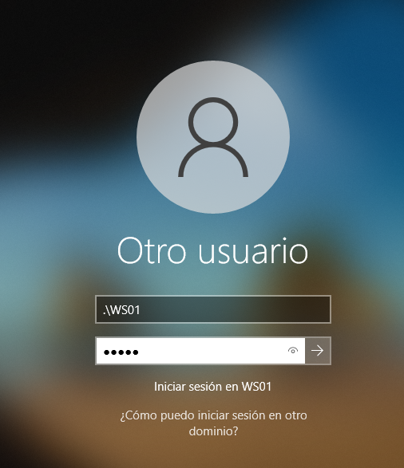
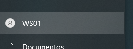
LSA LOGON SESSIONS
De forma práctica podemos ver esto en nuestra WS01 ya que como tenemos una sesión iniciada de forma local, hemos pasado esa autenticación interactiva y ahora podemos ver esa logon session y el access token asociados.
Microsoft ofrece una serie de herramientas de administración entre las que se encuentra una para visualizar las Loggonsessions: https://learn.microsoft.com/en-us/sysinternals/downloads/logonsessions
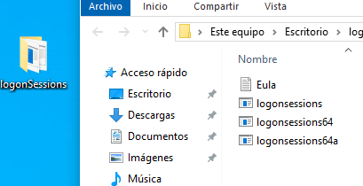
Como bien sabemos para esta herramienta se necesitan privilegios de administración, como este usuario es a nivel local se encuentra dentro del grupo administradores porque es el que se creó inicialmente con la máquina.
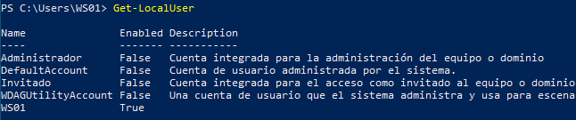
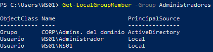
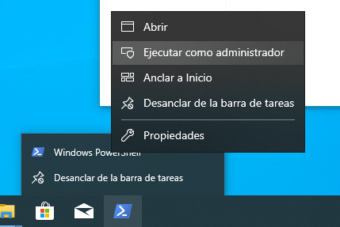
Ejecutamos el archivo .exe:
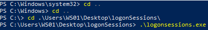
.\logonsessions.exe
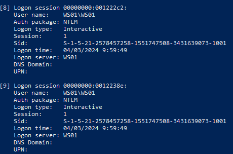
Si nos fijamos este usuario local tiene dos LogonSession creadas al mismo tiempo, ya que van asociadas a un AccessToken. Lo normal al autenticarse se crean dos sesiones para ese usuario, una con los privilegios que tiene este y otra con privilegios elevados ya que al iniciar el sistema algunos servicios necesitan de estos para ser ejecutados.
.\logonsessions.exe -p
Si ejecutamos ese parámetro veremos los procesos que hay asociados a cada una de esas LogonSessions.
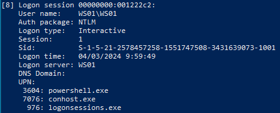
Esta sesion ejecuta los procesos que necesitan de privilegios elevados
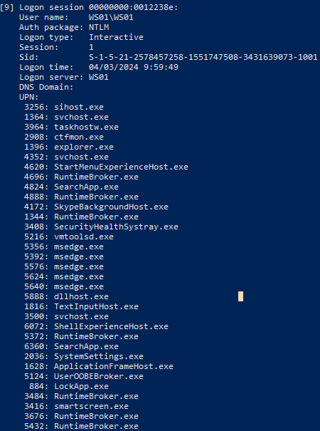
Esta otra los demas procesos que no son necesarios de privilegios elevados.
Como bien hemos visto antes estas dos sesiones tienen un token de acceso o AccessToken que les permite autorizar el acceso a diferentes objetos.
Vamos a ver una cosa curiosa, vamos a iniciar sesión de nuevo en un usuario de dominio:
Iniciamos un powershell como administrador:
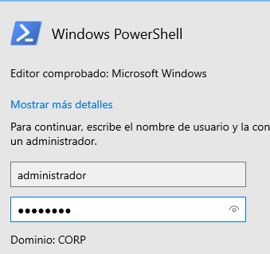
Ejecutamos loggonsessions.exe
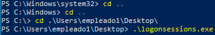
Si nos fijamos en las dos últimas sesiones:
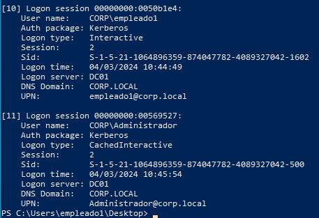
Son las dos sesiones que acabamos de crear, la de empleado1 de forma interactiva y la de administrador de forma interactiva pero veis que es otro tipo de interacción debido a que ha sido un prompt de ejecución de permisos y no un inicio de sesión como tal pero, como igualmente hemos interactuado como tal ya que hemos introducido las credenciales de administrador es interactivo.
Ahora bien, si vamos al DC01 y accedemos desde un powershell a el disco de WS01:
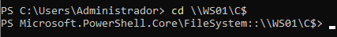
Estamos dentro de sus archivos pero ni siquiera nos hemos autenticado cierto?
Veamos de nuevo las logon sessions en WS01.
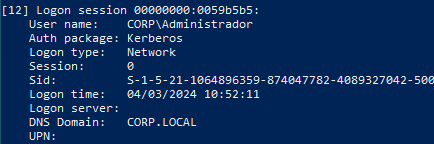
En último lugar veremos un acceso de administrador al equipo pero su tipo de inicio ha sido network y no interactivo.
Esto es importante porque cuando tenemos un logon interactivo en algún lugar de la memoria ram están las credenciales de los usuarios que han interactuado, como puede ser empleado1 o administrador al iniciar el powershell ambas almacenadas en el LSA.
Sin embargo en las sesiones de network o red no se almacenan las credenciales en la ram o LSA del equipo.
Por tanto de todo esto sacamos que existen dos tipos de tokens:
Volvemos a WS01 con empleado1:
https://learn.microsoft.com/en-us/sysinternals/downloads/process-explorer
Abrimos un powershell como adminstrador y otro como empleado1.
En el processexplorer administrador vemos dos procesos powershell:
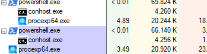
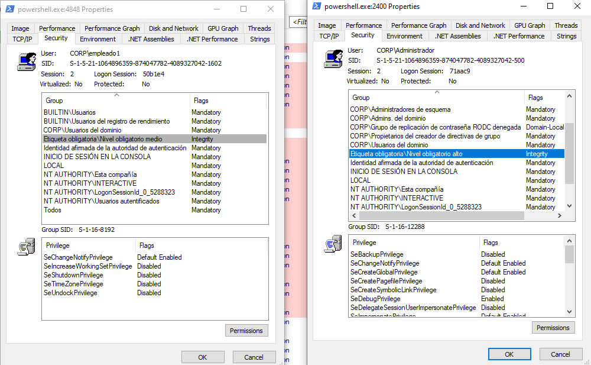
Aquí observamos las diferencias de privilegios, las diferentes logonsessions que usan y los usuarios relacionados con estos procesos.
Estos tokens de acceso son los que validan cuando la ejecución puede o no puede hacer algo según sus privilegios.